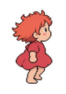

방향키나 WASD로 걷고 스페이스바로 폴짝 뛰어요. 길이나 장소 이름을 누르면 빌른이 걸어가요. 오른쪽 위 지도를 열면 바다 건너 목적지도 고를 수 있어요.
선착장에서는 배에 올라 섬으로 건너가요. 항해 중에 물속 구경을 고르면 빌른과 함께 헤엄칠 수 있어요. 낚시터에서는 찌가 움직일 때 끌어올리기를 눌러요. 실내에서는 문이나 노트를 눌러요.
빌른의 머리를 살짝 쓰다듬어 보세요. 터치 화면에서는 아래 화살표로 걸어요.
블로그 주소를 준비하고 있어요.
별이 커피 선물 전달을 위해 이메일 한 개를 수집해요. 접수 후 30일 이내에 삭제해요. 동의는 선택이며, 거절해도 마을을 계속 이용할 수 있어요.
가고 싶은 곳을 누르거나 방향키로 헤엄쳐 봐요.